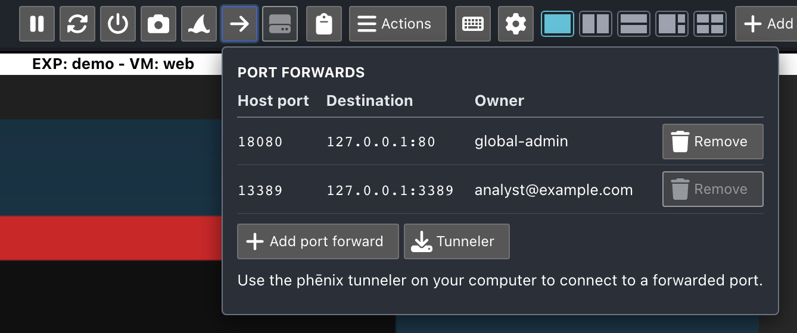

VMs¶
How to use and interact with VMs, from either the command line or Web UI.
Experiment view¶
Filtering and Sorting the VM Table¶


On the running experiment's VMs tab, the Hosts, Labels and Paginate
controls sit to the left of the Find a VM search box.
Hostslists every cluster host running one of the experiment's VMs. Check hosts to list only the VMs running on any of them.Labelslists everykey=valuelabel on the experiment's VMs. Check labels to list only the VMs that carry any of them.
Each button shows how many items are checked, and Clear hosts or
Clear labels unchecks them all. The filters combine with each other and
with the search box: a VM must match all of them.
VM Actions Column¶
The running experiment's VM table has an Actions column of icon buttons
that act on that row's VM without opening its details card. The buttons work as they do on the VM details card.

VM Info¶
Web UI¶
To open the details card for a VM, click on the VM's name from the VM table for an experiment. You can also navigate directly to the URL: /experiment/<exp>?vm=<vm>

VM Details Card¶
The VM details card has the following:
- the VM name and a state tag:
Running,Paused,Shut down,Building,Delayed start,Error,BusyorNot booted - OS icon (based on
hardware.os_type). - a
do not boottag, when the VM is flagged not to boot - the host the VM runs on and how long it has been up, or
starts after <delay>for a VM with a delayed start - the VM's description from the topology, if it has one
- Shortcut buttons for State of Health, SCORCH page, and the docs you're reading now.
- Live, view-only console of the VM (see The Details Window). Click the screen or
Open consoleto open the console page in a new browser tab. Clicking onTake controlwill enable direct interaction without opening a new tab! - miniccc state, vCPUs and memory, and interface count.
- Power buttons:
Start,Pause,Restart,Shut down, andKill. Each power action runs as a background job. - Storage: the disk image, the backing image chain, a CD-ROM if one is inserted, and a link to the Disks page.
- Network: interface ID, name, VLAN, IP, host interface, and a shark button to start a packet capture. There are also buttons on the top right to start and stop captures for all interfaces on the VM. See Packet Capture and Capture All Interfaces.
- Labels: lists the VM's labels, and
view/editopens the label editor. - Snapshots: lists the VM's snapshots, with buttons to restore or delete individual snapshots.
- Port Forwards: lists port forwards, with ability to delete forwards, and a
addbutton to open the menu to create a new one. Annotations: view and edit a VM's node annotations (see Adding Annotations). Changes are saved to the experiment, not to the Topology config. Changes only take effect when the experiment is restarted or an app that reads that annotation is triggered.More actions, under the screenshot, holds everything else (see More Actions below).
More Actions¶
| Button | What it does |
|---|---|
Redeploy |
Kill the VM and deploy it again, optionally with new CPUs, memory or disk |
Reset disk |
Reset the VM's disk to how it was when the experiment started, discarding changes |
Snapshot |
Save the VM's current disk and memory as a snapshot that can be restored later |
Screenshot |
Save a full-size PNG of the VM's screen in the experiment files, in the screenshots folder |
Backing image |
Create a new backing image from the current VM disk |
Memory snapshot |
Save a dump of the VM's memory for forensics tools such as Volatility |
Port forward |
Forward a port to a port on the VM through its miniccc agent |
Insert CD-ROM |
Insert an ISO image into the VM's CD-ROM drive. Reads Change CD-ROM when one is inserted |
Mount disk |
Mount the VM's filesystem to browse, upload and download files |
Reset disk and Snapshot ask you to confirm first. Screenshot saves the
image at once (see Save a VM Screenshot), and the
other buttons open a dialog.
Note
Mount disk appears only when the vm-mount feature is enabled (see Mount a VM).

An action that the VM's state rules out or your role cannot do is grayed out, with the reason in its hover tooltip.

Command Line¶
There are two options for displaying the information for VMs in an experiment. First run the following command to see information for all VMs in a given experiment.
Or, run the following to see the information for a specific VM in an experiment.
--host lists only the VMs running on specific cluster host(s). Press Tab after --host to complete host names.
phenix vm info my-exp --host compute1 --host compute2
phenix vm info my-exp --host compute1 --label role-web
-o json and -o yaml print the results from the API (GET /api/v1/experiments/{exp}/vms) in JSON or YAML format. These can be combined with --label and --host.
phenix vm info my-exp -o json
phenix vm info my-exp -o yaml
# Single VM
phenix vm info my-exp my-vm -o json
Create a Backing Image¶
Web UI¶
Click on the name of a running VM in a started experiment to open its details
card, then click Backing image in More actions. The same action is in the
VM table's Actions column. The VM must be running and
have snapshots enabled.
phēnix shuts down the VM while it makes the image, and then starts the VM again. It also starts the VM again if the operation fails.

Command Line¶
To create a backing image from the first disk of a running VM, run the following command.
The image name must be a bare file name, with no folder and must not start
with a scheme that minimega fetches, such as file: or http:. By default, the image is the base image name plus the current time. The image is written to <base-dir.phenix>/images. The VM must have its snapshot flag set.
Warning
For a VM with more than one disk, the backing image is created only for the first disk. This is a known issue that will be addressed someday. If this affects you, please open an issue on GitHub.
Create a Memory Snapshot¶
Web UI¶
Click on the name of a running VM in a started experiment to open its details
card, then click Memory snapshot in More actions. Type the file name and
click Create, or click Cancel to stop. The button is disabled
when the VM is not running.

Command Line¶
To create an ELF memory dump, run the following command.
A relative path is in the experiment files directory,
<base-dir.phenix>/images/<experiment-name>/files. For a VM on a compute
node, phēnix copies the dump to the head node from that directory only. Thus,
for such a VM, phēnix refuses an absolute path outside that directory. Each
memory snapshot stops after one hour if QEMU does not complete it.
Create a VM Snapshot¶
Web UI¶
Click on a running VM in a started experiment to open its details card, then
click Snapshot in More actions and confirm. The VM must be running and have
snapshots enabled.
The same action is in the VM table's Actions column and in the bar of a tile in the VNC tab when in Live mode (see Live Tiles).

Once a snapshot exists, the VM
card's Snapshots section lists it, and the play button next to its name
restores it.

Command Line¶
A VM snapshot holds the disk and the memory state of a VM. For an ELF memory dump, see create a memory snapshot. To save and restore the state of a running VM, do the steps that follow.
-
Create a snapshot of the VM. The command prints the name of the snapshot, for example
web__before-update. -
List the snapshots of the VM.
-
Restore the VM to a snapshot. Use a name from the list.
To delete a snapshot from every cluster node, use
phenix vm snapshot delete <experiment-name> <vm-name> <snapshot-name>. The experiment should be stopped before doing this, since phēnix refuses a snapshot whose disk a running VM uses.
The VM must have its snapshot flag set and only one disk. phēnix refuses a VM with more than one disk, because a snapshot holds only the first disk (#145).
phēnix keeps the snapshot files on the cluster node that runs the VM, in
<base-dir.phenix>/images/<experiment-name>/files. The list shows the
snapshots on all nodes. A restore of a VM on a node other than the head node
can fail if minimega on that node runs with the -headnode flag. minimega
then gets the snapshot files from the head node, which does not have them
(#153).
Save a VM Screenshot¶
Web UI¶
Click on a running VM in a started experiment to open its details card, then
click Screenshot (the camera icon) in More actions. The console page has
the same button in its top bar. phēnix saves a full-size PNG image of the VM
screen in the experiment files, in the screenshots folder. The file name is
<vm>-<YYYYMMDD-HHMMSS>.png, with the UTC time. phēnix does not replace a
file: when the name is in use, it adds -1, -2 and so on. A message shows
the name of the file. The button is disabled when the VM is not running.
In Live mode, the bar of a tile in the VNC tab also has Screenshot.

Command Line¶
The phenix vm screenshot command will save a screenshot of the VM's VNC to a file on the local system.
The command writes the file <vm>-<YYYYMMDD-HHMMSS>.png, with the UTC time, in
the current folder, and prints the file name. The name is the same as in the
web UI. The command does not replace a file: when the name is in use, it adds
-1, -2 and so on.
-O, --output-file gives the file a different name or folder. When stdout is not a
terminal, the command writes the image to stdout. --size sets the longest
side of the image in pixels.
phenix vm screenshot my-exp my-vm -O screen.png
phenix vm screenshot my-exp my-vm --size 800 > small.png
Note
Note that phenix vm screenshot won't save the screenshot to the experiment's files on the server.
If you need to do that, use the API
(POST /api/v1/experiments/<exp>/vms/<vm>/screenshots).
VM VNC Access¶
Web UI¶
The web UI shows the screen of a VM in three places:
- The console page (
/vnc) shows one to four VM consoles in a browser tab. - The VNC tab of a running experiment and the VM Tiles page show live tiles.
- The details window of a VM shows a live console.
The experiment must be started, and the VM must be running or paused and not busy with an action.
Warning
The console needs the minimega release that adds the vga column to
vm info. With an older minimega, the console shows minimega is too old:
vm info has no vga column, update minimega. Port forwards to the VNC port
of a VM also fail. Key recordings (vnc record kb) of an older minimega
do not include the key events that noVNC sends.
Open a Console¶
Click the screenshot of a VM in the VMs table, a live tile in the VNC tab, or
Open console in the details window of the VM. The console page opens in a
new browser tab. Each link has a real address. You can open the link in a new
window or copy it. When another tab already shows the same VMs, a message
tells you. Click Open another anyway to open one more tab.
The Console Page¶
The top bar acts on the pane that has keyboard input. It shows the VM name and these controls:
- The flask button, at the left of the VM name, opens the page of the experiment of the pane.
- In single view, the information button at the right of the VM name opens the details card of the VM on the experiment page.
- The VM action buttons:
PauseorResume,Restart,Shut down,Screenshot, the packet capture button,Port forwardsandMount disk.Screenshotsaves a PNG image of the VM screen in the experiment files (see Save a VM Screenshot).Mount diskopens the same file browser as on the experiment page. It needs thevm-mountfeature, a running VM and an active miniccc agent. - The packet capture button starts a capture on interface 0 when no capture
of the VM runs. When minimega can write pcapng, a dialog asks for the
format first. When a capture of the VM runs, the button is
Stop capturesand stops all captures of the VM. Port forwardslists the port forwards of the VM. Each forward hasRemove. Only the user that made a forward can remove it.Add port forwardopens the same dialog as on the experiment page.Tunneleropens the Tunneler page in a new tab.
Clipboard,KeysandVieware icon buttons. Their tooltips give their names.Clipboard: send text to the VM (see Copy and Paste).Clearempties the text box.Actions: a menu withSnapshot,Memory snapshotandBacking image, thenCapture interface…,Capture all interfaces(orStop all packet captures) andLink quality…, thenInsert CD-ROM(orChange CD-ROM), thenEdit labelsandEdit annotations, thenRedeploy,Reset diskandKillin red. Most open the same dialogs as on the experiment page.Capture interface…andLink quality…ask for the interface when the VM has more than one. A capture cannot use a disconnected interface or an interface that phēnix already captures.Link quality…then opens the same dialog asSet link quality…on the experiment page.Keys: send Ctrl+Alt+Del, Esc, Tab, PrintScreen and Ctrl+Alt+F1 to F12. Hold Ctrl, Alt or Win, and release all held keys. It also shows the keyboard shortcuts (see The Keyboard Chord).View: the scaling (Fit,ActualorResize VM), the zoom ofActual(50% to 200%), the quality, the compression,View only, full screen for the pane, andOpen alone in a new tab.Pane headersandBannersshow or hide the pane headers and the banners of the VMs. A zoom level also selectsActual. The browser keeps these settings for each user, exceptView only. WithView only, the console shows the VM screen, but sends no keyboard or mouse input to the VM.Resize VMneeds a VM withvgavirtio. To set it, addvga: virtioto theadvancedsettings of the VM in the topology. Linux VMs useqxlby default.- The layout buttons,
Add VMandFull screenfor the page. In full screen, the same button isExit full screen.Add VMshows the list of running VMs that it read the last time, and reads the list again. The browser keeps the list for each user. - The connection state, for example
Connected. Click it to see the screen size, the scaling, the encoding and the copy/paste mode. It also shows the host of the VM, its uptime, the state of its miniccc agent and its IP addresses, each with a copy button. Hide toolbar, at the right end, hides the top bar. The panes then use all of the page. AShow toolbarbutton at the same place shows the bar again. Ctrl+] then T also hides or shows the bar (see The Keyboard Chord). The browser keeps the choice.


An action that the VM state does not allow is grayed out, and its tooltip
gives the reason. An action that the role cannot do is also grayed out. Its
tooltip names the permission, for example
Your role does not permit this action (vms delete).
Pause, Restart, Shut down, Snapshot, Reset disk and Kill ask you
to confirm. Resume does not ask. During Redeploy and Reset disk, the
pane shows that the VM restarts, and the console connects again when the VM
runs. After Kill, the pane shows VM killed and a link to the experiment
page.

Split View¶
The console page shows up to four VMs. The VMs can be in different
experiments. Use Add VM to add a running VM, and select a layout in the top
bar: One pane, Two columns, Two rows, One large pane and two stacked
or Grid of four. The address of the page keeps the VMs and the layout, for
example /vnc?vm=demo/web&vm=demo/db&layout=cols. The layouts are single,
cols, rows, main-2 and grid.
Each pane shows the banners of its VM and a header with the VM name, the VM
state, an information button, the pane number and a menu. Pane headers and
Banners in the View panel hide the headers and the banners. The information
button opens the details card of the VM on the experiment page. The menu has Swap with pane N, Open
alone, Full screen and Close. Click a pane to give it keyboard input.
That pane shows a blue ring and the Keyboard tag. When you close a pane and
only one VM stays, the page shows that VM in one pane.
To open many VMs in one console page, select one to four running VMs in the
VMs tab, or with the check box on each tile in the VNC tab. Then click
Open N selected in split in the VNC tab.
The Keyboard Chord¶
The console sends every key to the VM. To move the keyboard out of the console, press Ctrl+], then one more key:
| Key | Action |
|---|---|
| Tab | Move focus to the top bar. Shift+Tab moves focus to the last control of the bar. When the top bar is hidden, move focus to Show toolbar. |
| 1 to 4 | Give keyboard input to that pane. |
| F | Exit full screen. |
| T | Hide or show the top bar. |
| Esc | Cancel the chord. |
Press the key in the position of ] on a US keyboard. On a German keyboard,
that key is +. The Keyboard tag, the Keys menu and a message show this
hint. The message shows the first time that a pane gets keyboard input in a
browser session.
Full Screen and HTTPS¶
In full screen over HTTPS, Chrome and Edge send Esc, Alt+Tab and Ctrl+W to the
VM (Keyboard Lock). To exit full screen, press Ctrl+] then F, or hold Esc.
Over HTTP, full screen works without Keyboard Lock, and a message says
Keyboard capture needs HTTPS. Firefox and Safari do not have Keyboard Lock.
Paste from clipboard in the Clipboard panel also needs HTTPS.
Copy and Paste¶
The copy/paste mode of a VM comes from its minimega setting
bidirectional-copy-paste:
- Paste as keys (the default): phēnix types the text into the VM as key
presses. It types printable ASCII characters, Tab and Enter only. Before it
types text with other characters, the panel lists the characters that it
types as "?" (above U+00FF) and the characters that it skips (U+0080 to
U+00FF). It also shows the typing time. Click
Type anywayorCancel. For text longer than 5,000 characters, the bidirectional mode is faster. - Bidirectional: the VM and the
Clipboardpanel exchange UTF-8 text in the two directions.
Live Tiles¶
The VNC tab of a running experiment and the VM Tiles page show a live,
view-only tile for each running or paused VM. A tile sends no keys and no
pointer events to the VM. A paused VM keeps a still tile with the PAUSED
tag. Click a tile to open its console page. Move the pointer over a tile to
show its bar, with Open console, Details and the VM power actions. In Live
mode, the bar also has Screenshot and Snapshot. The bar also shows when a control of the tile has
keyboard focus. A disabled button tells why in its tooltip. Pause,
Restart, Shut down, Kill and Snapshot ask you to confirm. Start and
Resume do not ask.

Live tile limitsets how many tiles can be live at one time: 4, 8, 16 (the default), 24 or 32. The browser keeps the choice. A tile over the limit shows a screenshot with theSnapshottag.Snapshotsturns off all live tiles, andLiveturns them on again.- A tile is live only while at least 25% of it is on the screen. A tile that leaves the screen, or a browser tab that is hidden, disconnects after 30 seconds.
- The server does not send screenshots of live tiles.
The Details Window¶
The details window of a VM shows a live, view-only console with the banners of
the VM. Click Take control to send keys and pointer events to the VM, and
View only to stop. Open console opens the console page of the VM.
Note
QEMU allows 32 shared clients for each VM. Every console, live tile, details window, minimega recording and paste playback counts. Thus a browser tab never opens two connections to one VM. While the details window or a console pane of a VM is open, the tile of that VM in the same tab disconnects and shows its last screen.
VM Settings for VNC¶
phēnix adds two settings to the minimega script of an experiment:
- For each KVM VM,
vm config qemu-override "-vnc unix:" "-vnc lossy=on,vnc=unix:", before theoverridesof the topology. With lossy updates, the quality level of a console or a tile selects JPEG for regions that look like photos. A topology override that matches-vnc unix:no longer matches, because this override changes that text first. - For each Linux VM,
vm config vga qxl, in place ofvm config qemu-append -vga qxl. phēnix does not add it when theadvancedsettings of the VM setvga. minimega then shows the video card in thevgacolumn ofvm info.
Note
The phēnix host must connect to the VNC port of each VM on the compute
node that runs the VM. minimega selects a random high TCP port for each
VM. Make sure that the network lets the phēnix host connect to these ports
on each compute node. When phēnix cannot connect, the console shows
phēnix cannot connect to the VNC port of <vm> on <host> (port <n>).

VNC Banners¶
Each pane of the console page and the console of the details window show a
banner above and below the VM's screen. Live tiles show no banners. On the
console page, Banners in the View panel hides them. Both
banners read EXP: <experiment> - VM: <vm> unless the VM has a vncBanner
annotation:
- A string sets the text of both banners. Each newline in it starts a new line.
- A map sets each banner apart.
topBannerandbottomBannereach take abannerlist of lines, abackgroundColorand atextColor. A banner the map leaves out is not shown, anddisabled: trueturns both off.
annotations:
vncBanner:
topBanner:
banner:
- Training range
- Lab use only
backgroundColor: "#007a33"
textColor: white
bottomBanner:
banner:
- Training range
backgroundColor: "#007a33"
textColor: white
Colors are CSS color names, such as green, or hex colors, such as #007a33.
Any other color falls back to the default white background or black text.
Banner text is shown exactly as written, so HTML in it appears as text.
Command Line¶
To reach the VNC console from your computer, add a port forward to it. The
vnc value forwards to the VNC console of the VM. Then use
phenix-tunneler to open the forward. The command needs a
running phenix ui.
phenix vm forward list and phenix vm forward remove show and remove the
forwards. A forward from the command line has the owner global-admin.
To save a PNG image of the screen of a running VM, see Save a VM Screenshot.
Mount a VM¶
The VM Mount feature lets you transfer files to and from a running VM directly
through the phēnix Web-UI. It is an optional feature that must be enabled when
starting the phēnix UI with the vm-mount feature flag (see
Enabling VM Mount below).
Note
Mounting a VM requires the minimega command-and-control agent (miniccc)
to be installed and actively running in the VM. If cc is not active for a
VM, the Mount disk button is disabled and phenix vm mount fails.
Enabling VM Mount¶
VM Mount is disabled by default. Enable it by passing the vm-mount feature to
the --features flag when starting the UI:
The feature can also be enabled via the ui.features configuration key or the
PHENIX_UI_FEATURES environment variable. See
Settings & Configuration for details.
Web UI¶
The experiment must be started. Click on the name of a running VM to open its
details card, then click Mount disk (the hard-drive icon) in More actions.
The button is disabled, with the reason in its tooltip, when the VM is not
running or has no active miniccc agent.
The mount browser modal lists the folders and files of the VM. Click a folder to open it. Click a file to download it from the VM to your local machine. An interrupted download resumes when retried from the browser's downloads list. Two controls below the list add a file to the open folder:
Upload Local File— browse to a file on your local machine and upload it into the VM.Copy experiment file— copy files that already exist on the phēnix server into the VM. This option is only available when the experiment file server is enabled (see below).

Every path stays inside the VM's file system, so a symbolic link that points outside it cannot be browsed or written through. Several users can have the same VM mounted at once, and it is unmounted when the last of them closes the modal.
Uploading Experiment Files from the phēnix Server¶
phēnix can optionally run a lightweight file server on a port separate from the main UI. This was added to support environments where the phēnix UI is only reachable on a private network but files (for example, application installers or configuration files) need to be uploaded to an experiment from a public network.
When the file server is enabled, the VM Mount modal gains the Copy
experiment file option described above, allowing files that have been uploaded to an
experiment to be copied directly into a VM without going through the user's
local machine.
Enable the file server by passing the --file-server-endpoint flag when
starting the UI:
# Bind to 127.0.0.1 on port 8080 (port-only value binds to localhost)
phenix ui --features vm-mount --file-server-endpoint 8080
# Bind to a specific interface and port
phenix ui --features vm-mount --file-server-endpoint 0.0.0.0:8080
The file server presents a simple interface for selecting an experiment and uploading a file to it. When authentication/authorization is enabled for the main phēnix UI, it is automatically enforced on the file server as well, so users must already have valid phēnix credentials to upload files. File upload permissions are included in the default Experiment Admin and Experiment User roles.
See Settings & Configuration for the
ui.file-server-endpoint configuration key.
Command Line¶
Use phenix vm mount to mount a running VM's filesystem to a directory on the
phēnix headnode. Unlike the Web-UI mount browser above, this does not require
the vm-mount UI feature flag to be enabled, and the mounted filesystem is
accessed directly on the headnode's filesystem rather than through the
browser.
The VM is mounted at <mount-dir>/<experiment-name>/<vm-name>, where
<mount-dir> defaults to <base-dir.phenix>/mounts (see
mount-dir). To use another folder, set
the global --mount-dir flag or the PHENIX_MOUNT_DIR environment variable.
The command prints the host path once the mount succeeds.
phenix vm mount my-exp my-vm
# VM my-vm in experiment my-exp mounted at: /phenix/mounts/my-exp/my-vm
To unmount the VM's filesystem, run:
Note
Mounts are automatically unmounted, and their mount directories removed, when the owning experiment is stopped or deleted, so mounts do not outlive their experiment.
Run a Command or Copy a File¶
Command Line¶
phenix vm exec runs a command in a running VM through its miniccc agent. It
prints the output of the command, and exits with the exit code of the command
when minimega reports it.
miniccc runs the command without a shell. To use pipes or redirects, run a
shell. Put -- before a command that has flags:
phenix vm cp copies one file into or out of a running VM. Give the VM side
as <vm-name>:<absolute-path>. A path that ends with / is a folder.
Both commands need the miniccc agent in the VM, and wait one minute by
default (--timeout). A copy out of the VM works only for a VM on the head
node, and the copy gets the permissions 0600. phēnix refuses an argument
with a $ variable or a file:, http:, https: or tar: URL, because
minimega would change it on the host.
Packet Capture¶
Web UI¶
Click on the name of the network tap, or on the IP address, of a running VM in a started experiment to start a packet capture on that interface. The name of the network tap will turn green once a packet capture has started. Each interface in the VM's details card has its own shark-fin button that does the same thing.

phēnix starts the capture, or stops a running one, without asking you to
confirm. A capture started from the web UI is written to the experiment's
files as <vm>_<interface>_<time>_<random>.pcapng, so a restarted capture
never replaces an earlier file.
It is possible to start captures on multiple network taps. Stopping the
capture on one interface leaves the VM's other captures running. Use
Stop all packet captures to stop them all.
The console page also starts captures, with the packet capture button of its
top bar and with Capture interface… and Capture all interfaces in its
Actions menu (see The Console Page).
A capture cannot be started on a disconnected interface; phēnix says
Cannot capture traffic on a disconnected interface. instead of starting one.
phēnix writes the capture file in pcapng format, and the file name ends in
.pcapng. When minimega cannot write pcapng, phēnix writes pcap, and the
file name ends in .pcap. The network menu of the VM table can also
start a capture in pcap format (see
Starting/Stopping Packet Captures).
To capture the traffic of all VMs into one file, see
Experiment Packet Captures.
Command Line¶
To start a packet capture, run the following command, specifying the target
network interface by its name (as declared in the experiment topology, e.g.
IF0) or its zero-based index.
The --format flag sets the capture file format, pcapng (the default) or
pcap. phēnix sets the extension of the output file name to match the format.
The ui.captures.max-size setting limits the size of the file (see
Settings).
To stop all packet captures on a running VM, use the following command.
Pass an interface name or index to stop only that interface's capture, leaving the VM's other captures running.
To list the running captures of an experiment, or of one VM, use the following
command. phenix exp captures <experiment-name> gives the same list.
A capture continues while its VM is paused.
Note
Stopping the capture on a single interface, Web UI or the command line, requires minimega 3.3.0 or later.
To view a capture's packets in the browser, or stream a running capture into a
local Wireshark (phenix vm capture stream), see WebShark.
Capture All Interfaces¶
Capture all interfaces, in the VM table's
Actions column and in the details card's
Network section, starts a packet capture on every connected
interface of the VM that does not already have one. It does not ask you to
confirm, and writes one .pcapng file per interface to the experiment's files.
The button is disabled, with the reason in its tooltip, when the VM is not
running, has no connected interface, or is already capturing every connected
interface. While captures run, a red Stop all packet captures button takes
its place and stops them all. The Actions menu of the console page has the
same item (see The Console Page).
Kill a VM¶
Web UI¶
Click on the name of a running VM in a started experiment to open its details
card, then click Kill in the Power section and confirm. The bar of a live
tile and the selection toolbar also ask you to confirm.

Note: if you stop and then start the experiment again, that VM will run again per the experiment configuration.
Command Line¶
To kill a VM, run the following command. Add --dry-run to show the VMs
that the command would kill.
Modify the Network Connectivity¶
Web UI¶
Click on the network for the desired VM in the Running Component to modify the settings. Select from a pull down what network you want to switch the VM interface you clicked on to. To revert back to previous setting, simply repeat selecting the network interface you wish to change, and select the previous network setting.

Command Line¶
To connect a VM network interface to a different network, run the following command.
To disconnect a VM network interface, run the following command.
phenix vm set with --interface <index>=<vlan> also connects an
interface, and --interface <index>= disconnects it.
Link Quality¶
Web UI¶
See Set link quality… in
Starting/Stopping Packet Captures.
On the console page, Link quality… in the Actions menu opens the same
dialog (see The Console Page).
Command Line¶
phenix vm qos shows and changes the packet loss, the delay or the rate limit
that minimega applies to the traffic that a VM interface receives. The
experiment must run. Give the interface as an index from 0 or as its name in
the topology.
phenix vm qos get <experiment-name> <vm-name> [<interface>]
phenix vm qos set <experiment-name> <vm-name> <interface> --loss 0.5 --delay 100ms
phenix vm qos set <experiment-name> <vm-name> <interface> --rate 10mbit
phenix vm qos clear <experiment-name> <vm-name> [<interface>]
A rate cannot go with a loss or a delay. set replaces the link quality of
the interface. clear without an interface clears each interface.
Pause a VM¶
Web UI¶
Click on the name of a running VM in a started experiment to open its details
card, then click Pause in the Power section and confirm. The bar of a live
tile, the selection toolbar and the top bar of the console page also ask you
to confirm.

Command Line¶
To pause a VM, run the following command.
To resume a paused VM, run the following command.
Redeploy a VM¶
Web UI¶
Click on the name of a running VM in a started experiment to open its details
card, then click Redeploy in More actions. The dialog that opens lets you
change the VM's CPUs, memory and disk, and whether the original injections are
replicated, before it is deployed again. Its Disk menu works as described in
Disk Menu, and the disk changes only when you pick a different
one.

Command Line¶
To redeploy a VM, run the following command.
The -c, --cpu and -m, --mem flags change a value only when you set them.
Without them, the VM keeps its current CPUs and memory. A new disk (-d, --disk)
replaces only the first disk of the VM. The other disks do not change.
The disk value is a minimega disk spec, <path>[,<interface>][,<cache-mode>],
for example new.qc2,virtio. A field that you do not set keeps the value of
the current first disk.
Reset Disk State¶
Web UI¶
Click on the name of a running VM in a started experiment to open its details
card, then click Reset disk in More actions and confirm. The button is
disabled when the VM is paused or does not have snapshots enabled, with the
reason in its tooltip, such as Cannot reset disk: the VM is paused. Resume
paused VMs first.

Command Line¶
To reset the first disk to the initial pre-boot state, run the following command.
Restart a VM¶
Web UI¶
Click on the name of a running VM in a started experiment to open its details
card, then click Restart in the Power section and confirm. Restart is
also in the VM table's Actions column. The button is
disabled when the VM is not running, with the reason in its tooltip. The bar
of a live tile, the selection toolbar and the console page also ask you to
confirm a restart. Restarting a selection of VMs from the table's toolbar
skips the ones that are not running.

Command Line¶
To restart a VM, run the following command.
Resume a VM¶
Web UI¶
Click on the name of the paused VM in a started experiment to open its details
card, then click Resume in the Power section.

phēnix refuses to start a VM that the topology sets to not boot
(general.do_not_boot), because minimega did not launch it. To launch the VM,
redeploy it.
Command Line¶
To resume a paused VM, run the following command.
Shutdown a VM¶
Web UI¶
Click on the name of a running VM in a started experiment to open its details
card, then click Shut down in the Power section and confirm. Shut down is
also in the VM table's Actions column, the selection
toolbar, the bar of a live tile and the top bar of the console page. Each one
asks you to confirm.

Command Line¶
To shutdown a VM, run the following command.
Modify VM Settings¶
Web UI¶
There are two ways to modify VM settings:
-
Click on a stopped experiment to access the Stopped Component. Its VM table shows each VM's host and IP address, and lets you edit the following:
- Host: the cluster host the VM is scheduled on
- CPUs
- Memory
- Disk: the image the VM boots from (see Disk Menu)
- Partition: the disk partition files are injected into
- Labels
- Boot: the do-not-boot flag
- Persistence:
Non-persistent(snapshots on) orPersistent
Edit a setting in the row of the VM, or click the VM name to open its details card. The card has the same settings, and you can also edit the labels and annotations of the VM there. A change saves at once, with no dialog. The control spins until the server answers. If the change fails, an error message shows and the control shows the previous value. A dot next to a setting tells that its value is different from the value that the VM had when the experiment was created.
Reset settingssets all of the settings back to those values. Experiments created before this version of phēnix have no saved values, so they do not showReset settings. The card also lists the port forwards that thephenix/startup-autotunnelannotation opens when the experiment starts. To change them, edit the annotation. TheSelect visible columnsbutton shows or hides the columns of the table. 1. From a running experiment, click on the VM name and thenRedeployinMore actionson its details card. You are able to edit the following: * CPUs * Memory * Disk * Replicate Original Injection(s)

Disk Menu¶
The stopped experiment's Disk column and the Redeploy dialog pick a VM's
disk from the images the experiment can use on the Disks page.
Images in the minimega files directory are listed by their path within it,
such as win/win10.qcow2. Images outside that directory are listed by full
path under Outside the standard images directory. On a stopped experiment,
picking an image writes the image's full path into the topology.
- An image whose path minimega cannot use is disabled and marked
(minimega cannot use this name). - A warning icon marks a disk outside the files directory.
- A red icon with a cross marks a disk whose backing chain is broken.
- A disk the list does not hold, such as a missing image, shows as
<full-path> (not listed).
The menu needs list on disks to offer other images. Without it, the menu
shows only the VM's current disk.
CD-ROM¶
Insert CD-ROM in the details card's More actions opens the CD-ROM picker
for a running VM. When an ISO image is already inserted, the button reads
Change CD-ROM and the picker names the inserted image. The picker lists the
ISO images the Disks page knows, with those outside the minimega
files directory in a group of their own. If there are none, it says so and
links to the Disks page, where an .iso file can be uploaded. Insert (or
Change) inserts the selected image, and Eject removes the inserted one.
From the command line, use
phenix vm cdrom insert <experiment-name> <vm-name> <iso-path> and
phenix vm cdrom eject <experiment-name> <vm-name>. minimega reads the ISO
path on the cluster node that runs the VM.

Command Line¶
To modify VM settings, run the following command, specifying one or more of the configuration flags described below.
Only the flags that are explicitly provided will be applied; any setting whose flag is omitted is left unchanged. The following flags are supported:
| Flag | Description |
|---|---|
-c, --cpu |
Number of VM CPUs (1-16 is valid). |
-m, --mem |
Amount of memory in megabytes (a multiple of 512 from 512 to 131072). |
-d, --disk |
VM backing disk image. |
-p, --partition |
Partition of the first disk to inject files into. 0 turns off disk injection, so the startup app sends its scripts through miniccc. |
--host |
Cluster host to run the VM on. An empty value lets the scheduler choose the host. |
--annotation key=value |
VM annotation. May be repeated. Replaces all of the annotations of the VM. |
--interface <index>=<vlan> |
Connect the interface to a VLAN alias or ID, or disconnect it with <index>=. Running experiments only. |
--do-not-boot |
Set the do-not-boot flag for the VM. |
--snapshot |
Set the snapshot (non-persistent) flag for the VM. |
-L, --label-changes key=value |
VM label to set, in key=value form. May be repeated to set multiple labels. |
--append-labels |
Append the provided labels to the VM's existing labels instead of replacing them. |
-l, --label |
Apply the change to every VM whose label matches the provided label (supports glob patterns). Use all to select every VM in the experiment. May be repeated. |
A label key or value may not hold a double quote, a backslash, $, or a
control character other than a newline or tab, and may not start with
file:, http:, https: or tar:. A VLAN an interface connects to may not
hold white space, ' or #.
For example, to set the CPU count to 4 and memory to 2048 MB for a VM named
my-vm in an experiment named my-exp:
To set the role=server labels on VMs whose existing labels matches
tier=web* in the same experiment, without clearing the existing labels:
To set two labels on the VM my-vm and replace the existing labels on the VM:
Note
Only labels, annotations and interface VLAN connections can be modified
while an experiment is running. Apps read the new annotations when the
experiment starts again. To change CPU, memory, disk, partition, host,
do-not-boot, or snapshot settings, the experiment must be stopped. Use
--interface or phenix vm net to
modify interface VLAN connections on a running experiment.
Applying Actions to Multiple VMs¶
Note
See VM Multi Action for documentation on applying actions to multiple VMs at once.
See Also¶
- phenix vm: every VM command and flag.
- Troubleshooting: what to do when a VM does not start.